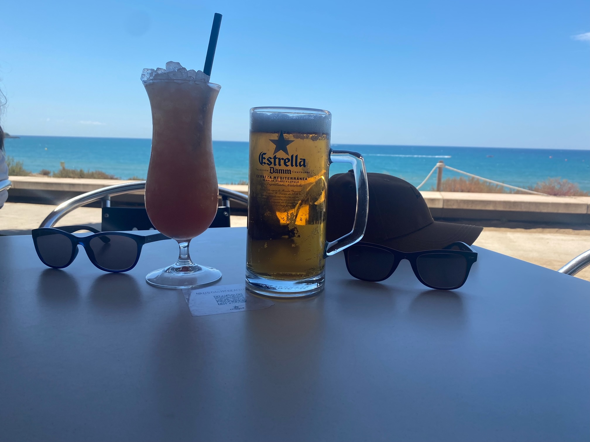

Hello all. I’m sat on our little terrace overlooking the pool and the palm trees. And it’s raining!
We’re all in shorts and T-shirts so not all bad. The alarm going off at 3am this morning feels like a lifetime ago. The airport wasn’t much fun with us accidentally getting into the drop off car park (which wasn’t gridlocked) rather the car park we were aiming for. Delay in time and cost in cash. Luckily we all stayed calm (winky face).
The queue for security was so long that after being in it for 2 hours we got pulled out to the front so that the plane didn’t go without us. We were pretty much the last ones on the plane.
There were a few people missing so they had their usual search for their bags to get them off the plane before we could set off. The missing family got to the plane before their bags were found so they were allowed to fly. Based on their appearance I was desperately trying not to judge them too harshly. The announcement that we had now missed our take-off slot meant I failed.
Everything went smoothly in Spain with bags, COVID passes and coach transfers. There was no opportunity to blame Brexit today. Even better, the rooms were ready three hours early.
We’re next door to each other in a block of flats that surround the pool and lake. All very pretty.
The weather was overcast and a bit damp so we walked into PortAventura to get some lunch, find our bearings and maybe squeeze in a ride. We were entirely successful.
Decent food, wander to the far end of the park and then the Shambala queue was pretty short so we went on that. It’s fantastic with loads of floaty negative g-force and very smooth. Only Jake and Jenny had the energy for the Dragon Khan follow-up (an extreme jiggly coaster).
The next big chunk of time involved a walk along the wrong side of a fence while Freya and Jenny decided the optimal way of killing me as punishment for my poor navigation. Eventually we got to the shopping centre but all 20 shops were shut down. Luckily, the supermarket we wanted was still open at the back. Lots of Fanta Limón, Pepsi and Chocolate for the fridge and a long walk back.
The old duffers had a little “resting of our eyes” while the kids went to the pool in the afternoon. They came back and Jenny told us she had found poo in the pool. I thought (well, hoped) it was some clever wordplay. It wasn’t. 💩 They had to get out of the pool anyway as the storm was approaching.
The included buffet evening meal was perfectly acceptable and the jug of sangria was delicious.
Sleep needed.
